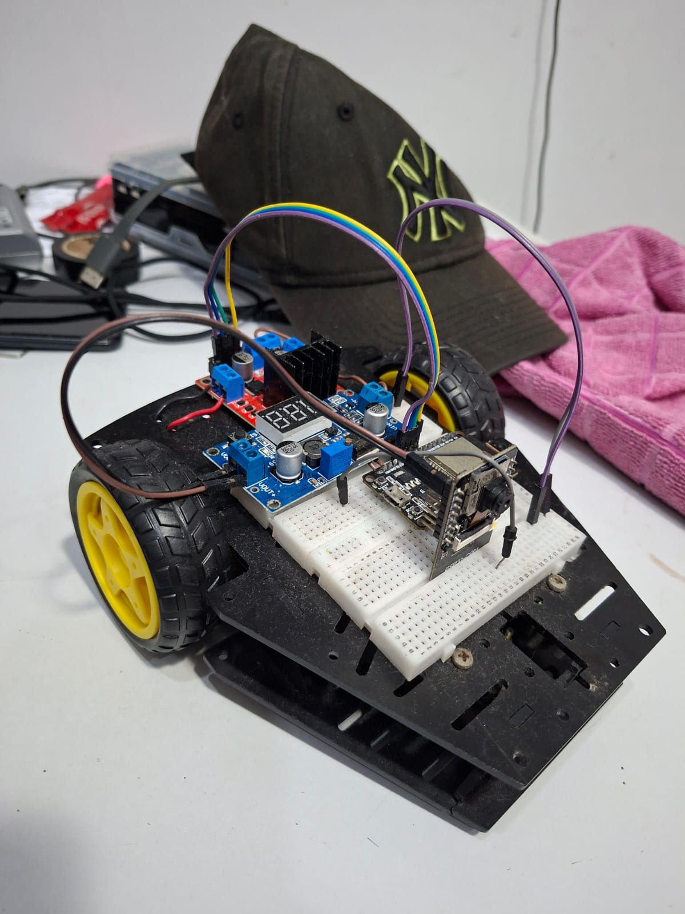

Alejandro de Lima
Estudante do Ensino Médio e Técnico em Desenvolvimento de Sistemas na Etec Dra. Ruth Cardoso
Alejandro de Lima é estudante do Ensino Médio e Técnico em Desenvolvimento de Sistemas na Etec Dra. Ruth Cardoso, com interesse em sistemas embarcados, Internet das Coisas (IoT) e desenvolvimento de aplicativos móveis.
Sobre Mim
Alejandro de Lima é estudante do Ensino Médio e Técnico em Desenvolvimento de Sistemas na Etec Dra. Ruth Cardoso. Possui interesse em sistemas embarcados, Internet das Coisas (IoT) e desenvolvimento de aplicativos móveis, tendo trabalhado em projetos que integram hardware e software para soluções inovadoras.
Tecnologias
Projeto em Destaque

Smart RC Car (Carrinho IoT com Controle por Giroscópio & Streaming)
Desenvolvimento completo de um protótipo de veículo controlado remotamente via aplicativo móvel, integrando hardware e software de ponta a ponta. O ecossistema do projeto foi dividido em três pilares:
Visão em Tempo Real: Um módulo ESP32-CAM dedicado exclusivamente a capturar e transmitir o streaming de vídeo ao vivo para a tela do usuário.
Controle Cinemático: Um segundo módulo ESP32 responsável por receber os comandos de movimentação e gerenciar os motores do carrinho.
Aplicativo Android Nativo: App desenvolvido no Android Studio que utiliza a API do giroscópio do smartphone. Isso permite que o usuário pilote o carrinho intuitivamente apenas inclinando o celular (frente, trás e laterais), enquanto acompanha a transmissão da câmera em tempo real.
Tecnologias Utilizadas: Android Studio (Java/Kotlin), ESP32, ESP32-CAM, C/C++ (Arduino), Sensores de Giroscópio, Protocolos de Rede e Streaming de Vídeo.